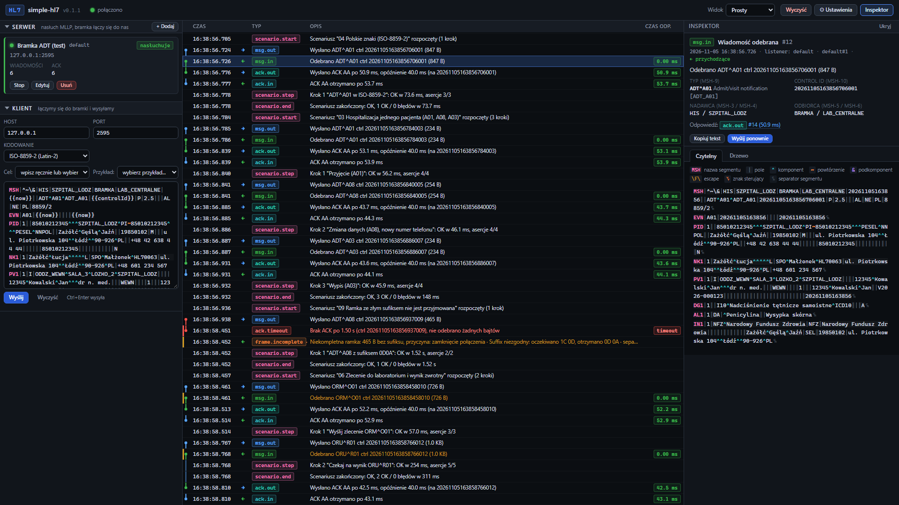
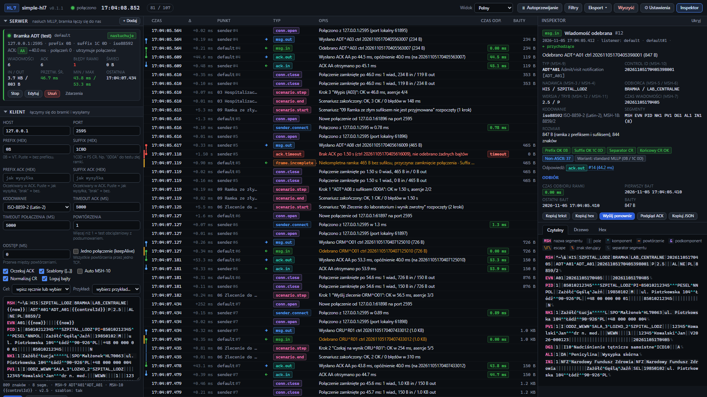
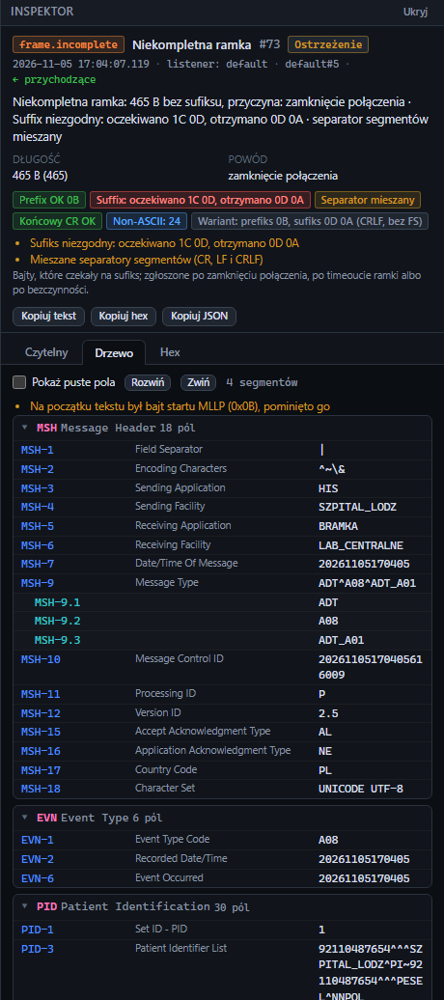
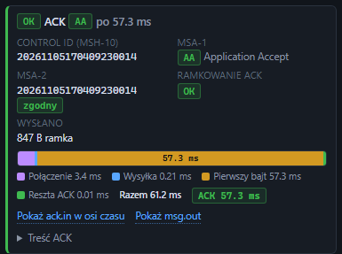
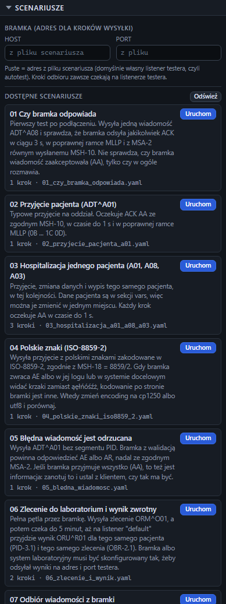

Test your HL7 gateway
with one file
Send and receive HL7 v2 over MLLP, check every frame and every ACK, and measure the gateway's response times to the millisecond.
latest Windows and Linux x64 Free and open source Interface in Polish

Up and running in three steps
-
Download
One file for Windows or Linux. No installer, no runtime, no Docker.
-
Run
Start it on the server next to the gateway and open its address in a browser, from any computer.
-
Test
Send to the gateway or let it send to you, and watch every message and ACK as it happens.
Simple to start, detailed when you dig
A switch in the top bar decides how much the screen shows. Start with the essentials and open the full view when you need every byte and every millisecond.
- SimpleSend, receive and read the message
- StandardAdds the frame, filters, export and scenarios
- FullEvery timing, column and tool
- CustomPick exactly the parts you want

Everything a gateway test needs
In a browser tab, served by the program running next to the gateway.
Server and client in one
Listen for the gateway on any number of ports and send to it at the same time, so both directions are tested in one loop.
Every frame checked
Prefix, suffix, segment separators and stray bytes, with a plain hint when the gateway gets the frame wrong.
Response times you can quote
Every message and ACK on a millisecond timeline, with minimum, average, maximum and p95 for a series.
Messages you can read
Colour-coded segments, a tree with HL7 2.5 field names and a hex view. National characters checked against MSH-18.
Ready scenarios
Nine repeatable tests, from “does the gateway answer at all” to an order sent out and its result coming back.
Evidence for the report
Export the timeline to CSV or NDJSON. The full history also goes to a log file next to the program.
A closer look



Download
Latest release: checking…
Windows
Windows 10, 11 and Windows Server. One .exe, no installer: give it a folder of its own.
Linux
x64 with glibc 2.28 or newer: RHEL, Rocky and Alma 8+, Ubuntu 20.04+, Debian 10+.
Download for Linux x64Checksums
SHA-256 of both files, to check a copy that reached the server through several hands.
Download checksumsThe files are not signed with a certificate, so Windows SmartScreen asks once: choose “More info”, then “Run anyway”. Each file carries its own runtime, which is why it is large.
Your data stays with you
Nothing leaves the server
No telemetry, no account, no update check. Messages stay in the program's own log and exports.
Keep it off the internet
The interface has no password. Limit its port on the firewall, or start it with --listen 127.0.0.1:7575 and reach it through SSH.
Files you can verify
Every release comes with the SHA-256 of both files, published next to them.